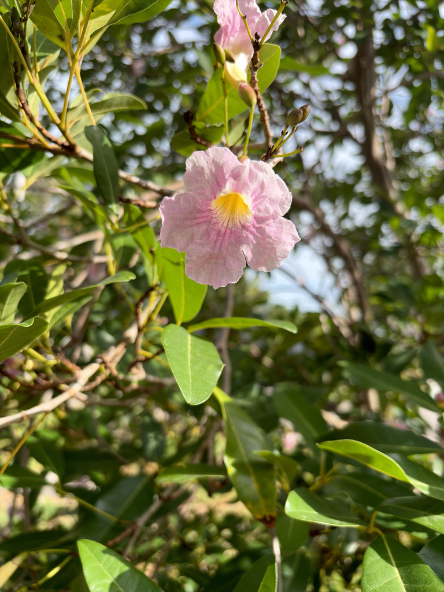

- This tree is the Territorial Tree of the British Virgin Islands, where its common name White Cedar reflects a long history of practical use — the durable, straight-grained wood was traditionally the material of choice for building the classic Virgin Island sloop.
- The species name heterophylla means 'variable-leaved' in Greek, and the tree earns it: young shoots often carry simple, undivided leaves while the same mature branch bears compound leaves with up to five leaflets. Both shapes can appear on the same tree at the same time.
- When it blooms, the flowers often arrive before — or alongside — the new leaves, so the tree briefly becomes almost all flower and very little green. The fallen petals can carpet the ground in solid pink.
- The name Tabebuia is shortened from a Tupi-Guarani phrase meaning 'ant wood' — and the tree lives up to it. Many species in the genus, including this one, develop hollow, soft-pith twigs that ants colonize and defend, driving off leaf-cutting insects and other herbivores in exchange for a safe home. The tree even sweetens the deal with nectar glands at the base of each leaf stem.
- Looks can deceive: behind the delicate pink blossoms is one of the Caribbean's toughest pioneer trees. T. heterophylla colonizes eroded ridges, abandoned pastures, and pure limestone rubble where most trees fail, quickly forming dense stands that stabilize soil and open the door for slower-growing forest species to follow.
- That same relentlessness is why it became a reforestation workhorse in Puerto Rico — and an ecological concern on Pacific islands where it was introduced.
Native to the Caribbean — from Cuba and Jamaica through Puerto Rico and Hispaniola, south through the Leeward and Windward Islands to Trinidad and Tobago, with scattered occurrence in the Bahamas and Cayman Islands. It is particularly abundant in Puerto Rico, where it is found on nearly every soil type and land form except the highest mountain elevations.
In its native range the Pink Trumpet Tree occupies dry coastal woodlands, secondary forests, and abandoned pastures, showing a strong ability to establish on degraded and poor soils. It is both a timber tree grown in plantations and one of the most widely planted ornamental trees in the Caribbean basin.
In Florida it is a cultivated ornamental with no native status. UF/IFAS rates it for USDA Hardiness Zones 10A through 11 — South Florida and the Keys — though it can be grown as far north as Central Florida where hard freezes are rare. Bradenton sits at the edge of its comfortable range, making the specimen here a useful indicator of what the tree can achieve in a borderline climate.
- The Pink Trumpet Tree is classified as Least Concern on the IUCN Red List — not surprising for a species that thrives on disturbance, regenerates readily from wind-dispersed seed, and tolerates a wide range of soil conditions.
- Outside its native range, however, that adaptability cuts both ways: it has become a documented invasive on Pacific and Indian Ocean islands, where it spreads into dry coastal woodlands and secondary forest.
- The wood is dense and durable enough to have supported a shipbuilding tradition in the Virgin Islands, and its uses run wide: furniture, flooring, cabinetwork, agricultural implements, boat planking and decking, and oars. In Puerto Rico a protected forest grove called La Robleda has become famous for its spring bloom, drawing visitors for a few spectacular weeks each year.
When the Pink Trumpet Tree is in flower, it functions as a reliable nectar station. Tabebuia flowers broadly are documented food sources for bees and hummingbirds, and the showy, tubular blooms of this species are well-shaped for hummingbird foraging. Bees — native and introduced — work the flowers actively during bloom periods.
Because it is a non-native tree with no co-evolutionary history in Florida, it does not serve as a larval host for local butterflies or moths. Visitors looking for the park's strongest butterfly and pollinator habitat will find it in the native plantings. The Pink Trumpet Tree's contribution here is primarily as a nectar source during its spring and summer bloom.
Propagated by seed, semi-hardwood cuttings, or air layering. Seeds are wind-dispersed, lose viability quickly, and should be sown within a few weeks of collection; fresh seed germinates in about one to two weeks. The tree is a prolific seeder and an effective pioneer in disturbed ground.
Showy trumpet-shaped flowers, two to three inches long, pink to pale lavender with a pale yellow throat, borne in terminal clusters. Flowers appear in spring and into summer, often emerging on leafless or only partially leafed branches, which gives the bloom its full visual impact. The inflorescence is of the umbellate type.
Long, slender, cigar-like seedpods — roughly 8 to 20 centimeters long — ripen from green to dark brown and split along two lines to release numerous thin, papery-winged seeds about half an inch to an inch long. Wind carries the lightweight seeds well away from the parent tree.
Opposite, palmately compound, typically with five large, rounded, glossy dark green leaflets, though the number can vary from one to five on the same tree — the source of the species name heterophylla. The tree is briefly deciduous or semi-deciduous as new leaves flush, particularly in drier conditions or at the northern edge of its range.
Typically a single trunk, without drooping branches or thorns. Bark is silvery gray and smooth when young, becoming furrowed and somewhat scaly with age. The crown is irregular and oval, narrowing toward the top — open and moderately textured rather than dense.
The most dramatic moment to encounter this tree is when it is in full spring bloom: clusters of pink trumpets at the branch tips, often against a background of little or no foliage. Look closely at the leaves — you may find both simple leaves and compound ones with multiple leaflets on the same branches, which is unusual and worth pausing over.
After bloom, watch for the long, slim seedpods that gradually brown and split to release the winged seeds.
The bark is worth a look too: smooth and silvery gray when young, developing a furrowed texture on older trunks.
No documented toxicity to people, dogs, or cats was found in authoritative sources. The tree is not a food plant; nobody eats it, but it is not known to be harmful. The winged seeds are lightweight and not a choking or ingestion concern. Otherwise harmless — handle and enjoy freely.
Several other trumpet trees are planted in Florida landscapes and can be confused with this one. The most common mix-up is with Tabebuia pallida (Cuban Pink Trumpet Tree), which has very pale, nearly white flowers and grows taller.
Yellow-flowering trumpet trees in the park belong to different genera entirely — Handroanthus and Tabebuia aurea — after a 2007 taxonomic revision split the old broad Tabebuia into several genera based on DNA evidence. T. heterophylla remained in Tabebuia.
UF/IFAS rates this species for USDA Hardiness Zones 10A through 11. Bradenton is Zone 10A, so this tree is right at its reliable northern limit on the Florida peninsula; an unusually cold winter can stress or briefly defoliate it.


- © Ruby Meador (CC-BY-NC), via iNaturalist